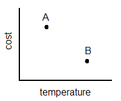
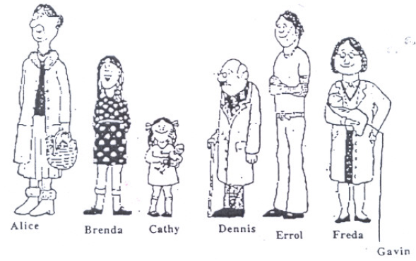
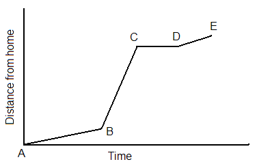
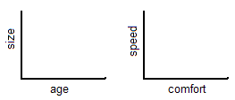
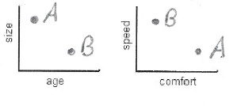
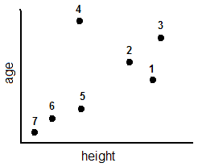

Statistics Unit
2.2 Interpreting Graphs on a Coordinate System
- Interpret point A in terms of point B. 
- Now interpret point B in terms of point A.
- Do the same for the following graph:
- The following three graphs provide information about two cars:
![There are three graphs. The horizontal axis on the first graph represents speed and the vertical axis represents age. Car A is low on the horizontal axis and low on the vertical axis. Car B is high on both axes. The horizontal axis on the second graph represents size and the vertical axis represents comfort. Car A is large in size and high on comfort. Car B is small in size and high on comfort. The horizontal axis on the third graph represents cost and the vertical axis represents miles per gallon. Car A is high in cost and low in miles per gallon. Car B is low in cost and high in miles per gallon.](images/u2s2p4.png)
Which of the following statements are true?
- The older car is the slower car.
- The larger car has a more comfortable ride.
- The car with the better gas mileage costs more.
- The faster car gets better gas mileage.
B and D are both true.
- Match points on the coordinate system grid that represents heights and ages of the individuals with sketches of the individuals. 
- This graph represents a portion of the morning commute to school by one student. Explain what is happening for each section of the graph. 
- Match the following scenarios with the graphs below. Label the axes.
- A train pulls into a station and lets off its passengers.
- A man takes a ride on a Ferris wheel.
- A woman climbs a hill at a steady pace and then starts to run down one side.
- A child swings on a swing.
- A child climbs up a slide and then slides down.
A is higher in cost and lower in temperature than B.
B is lower in cost and higher in temperature than A.

A is thicker and wealthier than B. B is thinner and not as wealthy as A.
Place points A and B representing the two cars on the graphs below:


1. Errol 2. Freda 3. Alice 4. Dennis 5. Brenda 6. Cathy 7. Gavin
A. The population of frogs decreased as the pond became more polluted.
Graph b
The horizontal axis represents the amount of pollution in the pond and the vertical axis represents the population of frogs in the pond.
B. The diameter of the cocoon increased rapidly at first, then increased more slowly as the caterpillar prepared to change into a butterfly.
Graph f
The horizontal axis represents time and the vertical axis represents the diameter of the cocoon.
C. The temperature of the oven changed after the oven was turned on.
Graph c
The horizontal axis represents time and the vertical axis represents the temperature of the oven.
D. The length of time it takes to paint the gymnasium changed as the number of people painting increased.
Graph a
The horizontal axis represents the number of people painting the gym and the vertical axis represents the amount of time it takes to paint the gym.
![There are six graphs in the picture. Graph a is a decreasing line that starts high on the vertical axis and decreases until it almost reaches the horizontal axis. Graph b starts high on the vertical axis, and it curves down toward the horizontal axis and begins to level out. Graph c starts low on the horizontal and vertical axis. It rises in a curve and then dips down a little, rises again and dips down again and stops. Graph d starts looks like a concave up parabola. Graph e is a line that is increasing from left to right. Graph f also increases from left to right, but it is a curve. Once it reaches a certain height, it begins to level off. Graph g is a concave down parabola. Graph h is made of two line segments. The first part increases sharply for a short length and the second part increases slightly and is a little longer than the first part.](images/u2s2p7.png)
Choose the graph the matches each statement:
![There are four graphs to choose from. On each graph, the horizontal axis represents time elapsed and the vertical axis represents speed. The first graph is a horizonatal line that is high on the vertical axis. It has a short vertical line on the right end that is very short and goes down toward the horizontal axis. The second graph is a decreasing line that starts high on the vertical axis and stops when it reaches the horizontal axis. The third graph is curvy. It starts high on the vertical axis, goes up and dips down three times. Each hill is smaller than the previous one. The fourth graph is a horizontal line high on the vertical axis. At the right end of the horizontal line is a vertical line that goes all the way to the horizontal axis.](images/u2s2p8.png)
Graph b
![There are four graphs to choose from. On each graph, the horizontal axis represents time elapsed and the vertical axis represents distance from the ground. The first graph is several intersecting loops. The first loop starts high , curves down and back and then up again. The pattern is repeated. The second graph rises in a curve starting at the origin, then dips down, but not all the way to the horizontal axis, rises again and dips down again. The third graph is similar to the second one, but the rises and dips are not all the same size, wheras, they are in the third graph. The fourth graph has one loop similar to the loops in the first graph.](images/u2s2p9.png)
Graph b
![There are four graphs to choose from. On all four graphs, the horizontal axis represents time elapsed and the vertical axis represents speed. The first graph starts out as a short horizontal line and then becomes an increasing line that is about the same length. The second graph is an upside down V. The third graph starts as a short line that is increasing and then becomes a horizontal line that is a little longer. The fourth graph starts at the orign, rises in a curve, dips down and rises again, infinitely.](images/u2s2p10.png)
Graph a
![There are four graphs to choose from. The first graph is formed with curves. It starts low on the vertical axis, but not all the way on the horizontal axis. It rises and then falls, rises and then falls. Each time it rises, it is a little higher than the previous one. The seond graph is a curve that starts low on the vertical axis, but not on all the way down to the horizontal axis. It increases gradually and infintely. The third graph is in the shape of a concave up parabola with the vertex low on both axes. The fourth graph begins with a very short horizontal line and then dips down in a curve, rises, dips and repeats until it begins to level off after three increasingly smaller dips.](images/u2s2p11.png)
Graph a
![There are four graphs to choose from. The first graph is made up of three line segments. It starts as an increasing line, then becomes a short horizontal line, then it is a decreasing line. The second is like steps rising up, a short horizontal line at the top and then a decreasing line. The third graph starts as a horizontal line high on the vertical axis, dips down in a curve all the way down to the horizontal axis, rises high and then makes an almost vertical dip back down to the horizontal axis. The fourth graph begins as a vertical line that goes straight up the vertical axis. Then it becomes a short horizontal line, then a decreasing line back down to the horizontal axis.](images/u2s2p12.png)
Graph c